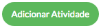
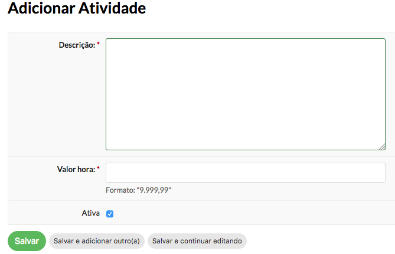
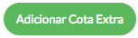
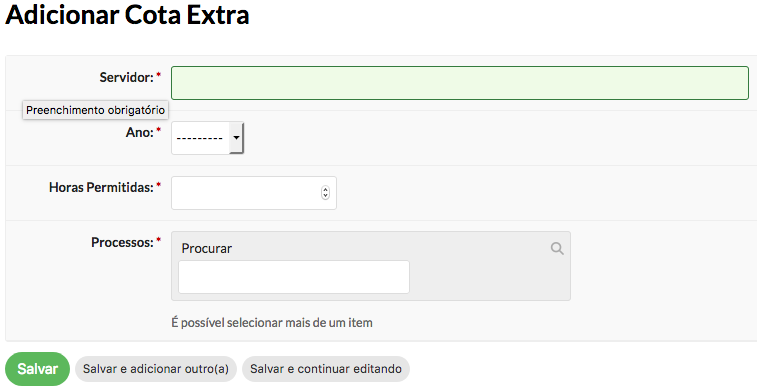
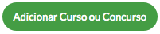
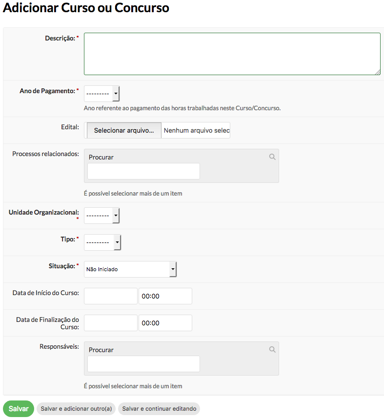
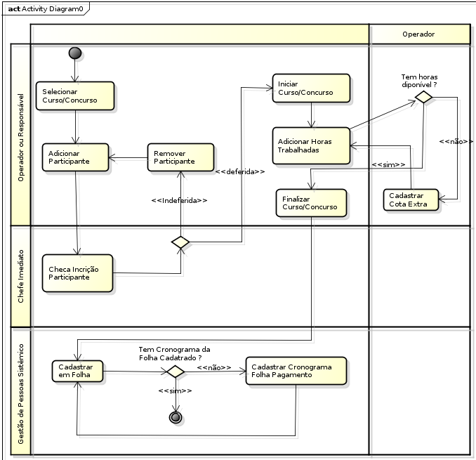

Conteúdo
O novo módulo de GECC foi desenvolvido para substituir o antigo que servia basicamente como um registro dos cursos e concursos já ocorridos. A modificação desse módulo permitirá que a ferramenta proporcione um melhor controle e a obtenção, de forma mais adequada, de dois objetivos:
Controle das cargas horárias objeto pagamento de GECC de modo que permita ao coordenador do processo o conhecimento prévio dos saldos de c.h. disponíveis dos servidores candidatos à participação na atividade.
Contabilização das despesas com GECC, apresentando resultados por campus e por mês de folha de pagamento, e em valores segregados por tipo de atividade.
Acesse Gestão de Pessoas > Desenvolvimento de Pessoal > Cursos e Concursos
O menu de Cursos e Concursos estará disponível para os servidores que:
Tiver os perfis: Operador de Cursos e Concursos, Visualizador de Cursos e Concursos, Coordenador de Gestão de Pessoas Sistêmico e Auditor
Nota
Os servidores que fizerem parte de um curso ou concurso como participante ou responsável, serão adicionados automaticamente no grupo “Visualizador de Cursos e Concursos”.
Operador de Cursos e Concursos
Gerenciar atividades
Gerenciar cotas extras
Gerenciar cursos e concursos
Gerenciar participantes
Pode visualizar relatório financeiro (menu: GESTÃO DE PESSOAS > Desenvolvimento de Pessoal > Cursos e Concursos > Relatórios > Relatório para Pagamento)
Visualizador de Cursos e Concursos
Pode visualizar a lista de cursos e concursos cadastrados
Nota
Se o servidor for o responsável pelo curso ou concurso, terá as mesmas ações do perfil de Operador de Curso e Concurso, mas apenas no evento em que é responsável.
Coordenador de Gestão de Pessoas Sistêmico
Pode visualizar relatório financeiro (menu: GESTÃO DE PESSOAS > Desenvolvimento de Pessoal > Cursos e Concursos > Relatórios > Relatório para Pagamento)
Pode cadastrar cronograma da folha de pagamento (menu: GESTÃO DE PESSOAS > Cadastros > Cronograma da Folha)
Auditor
Pode visualizar todas as telas do módulo, apenas com a permissão de visualização, não podendo inserir, atualizar ou deletar nenhum informação.
A atividade a descrição do que o servidor participante irá realizar no evento.
Para cadastrar uma atividade basta acessar o menu GESTÃO DE PESSOAS > Desenvolvimento de Pessoal > Cursos e Concursos > Atividades e clicar no botão Adicionar Atividade 
Preencha o formulário e clique em Salvar 
A cota extra server para acrescentar às 120 horas padrão mais horas de trabalho quando necessário.
Para cadastrar uma cota extra você deve acessar o menu GESTÃO DE PESSOAS > Desenvolvimento de Pessoal > Cursos e Concursos > Cota Extra 
Preencha o formulário e clique em Salvar 
Nota
Só poderá ser cadastrada uma cota extra por ano para um servidor
É necessário existir o processo autorizando o acréscimo de horas para o servidor
O cadastro do curso e concurso é de fato onde o evento será cadastrado. Também é neste momento onde selecionamos os responsáveis pelo evento, que irão gerir todos os passos do evento.
Para cadastrar um evento, basta acessar o menu GESTÃO DE PESSOAS > Desenvolvimento de Pessoal > Cursos e Concursos > Cursos e Concursos e clicar no botão ‘Adicionar Curso ou Concurso’ 
Preencha o formulário e clique em Salvar 
Nota
Adicionar participantes ao evento
Iniciar o evento quando a chefia imediata da cada participante tiver deferido as participações
Adicionar as horas trabalhadas aos participantes
Finalizar o evento
